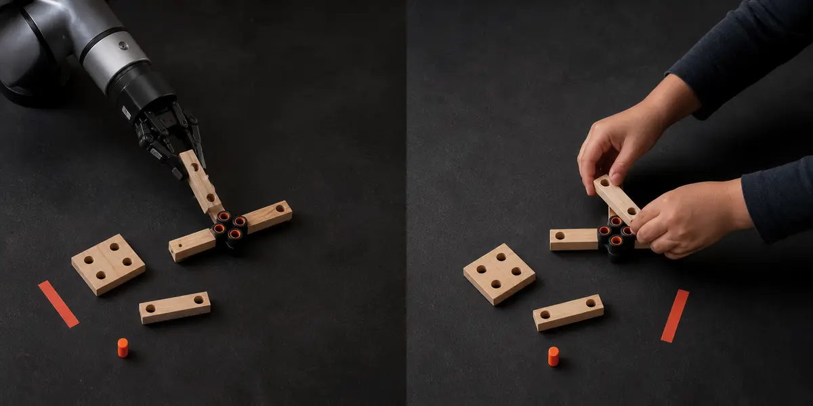
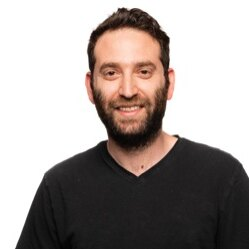
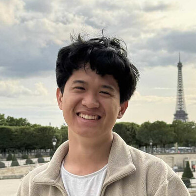

Mike Rabbat
AMI Labs
Speaker & panelist
Talk title to be announced
Does physical intelligence need structure?

What does it take to achieve the physical intelligence of a five-year-old? Children learn to manipulate new objects and generalize skills from only a handful of interactions. Despite rapid progress in vision and language, today’s robots remain far less data-efficient and lack comparably rich training data.
Structured Physical Intelligence (SPIN) asks how physical priors and structured world representations can close this gap. Relevant approaches include Visual-Language-Action models (VLAs), world models, object-centric and compositional representations, affordances, and particle-based models. Robotics provides a direct test of whether these ideas support efficient generalization across locomotion, dexterous manipulation, hierarchical control, and few-shot learning.
The workshop brings researchers together to examine recent advances, current limitations, and open problems. The workshop will feature a live dexterous manipulation competition that puts today’s robots side by side with a child, with invited talks and a panel discussion.
This half-day workshop is organized around five questions spanning structure, representation, learning, and evaluation for physical agents:
How do today’s robots compare with a child on everyday manipulation tasks?

A child can quickly pick up, turn, stack, and insert unfamiliar objects. This competition invites robotic systems to attempt the same kinds of tasks, creating a clear and constructive benchmark for current progress in dexterous manipulation. It is open to all researchers, students, and practitioners from academia and industry.
The competition will feature 10 dexterous manipulation tasks using familiar objects. Each task will be selected so that it can be completed by a child, providing an intuitive point of comparison for today’s robotic systems.
We will provide hardware for participants to use. Platform details will be announced. Teams and participants are also encouraged to bring their own identical hardware, subject to approval.
On the day of the competition, every task will be evaluated against its own clearly defined success criterion. A panel of neutral judges will assess each attempt consistently, and each system’s performance will be compared task by task with the child’s performance on the same activities. The detailed judging procedure, number of attempts, and reporting format are TBD.
The goal is to produce a transparent, constructive view of current capabilities across a varied set of everyday tasks and to identify promising directions for future research.
All four invited speakers are committed, and will also join the panel discussion.
AMI Labs
Speaker & panelist
Talk title to be announced
Stanford University
Speaker & panelist
Talk title to be announced
Columbia University
Speaker & panelist
Talk title to be announced
TU Darmstadt
Speaker & panelist
Talk title to be announced
Tentative morning half-day schedule, in person.
| 8:30 | Welcome — opening remarks, tasks and rules (10 min) |
| 8:40 | Keynote Talk 1 — 25 min + 5 min Q&A |
| 9:10 | Keynote Talk 2 — 25 min + 5 min Q&A |
| 9:40 | Challenge, Part 1 — 40 min. |
| 10:20 | Keynote Talk 3 — 25 min + 5 min Q&A |
| 10:50 | Keynote Talk 4 — 25 min + 5 min Q&A |
| 11:20 | Challenge, Part 2 and Judging — 40 min. |
| 12:00 | Results and Panel: What is Next in Structured Physical Intelligence Models? — 45 min. |
| 12:45 | Concluding remarks — 5 min |
| 12:50 | Adjourn |


Questions about the workshop can go to roeiherz@gmail.com, amirb4r@gmail.com, or csferrazza@berkeley.edu.
Sponsor logos and acknowledgements will be added here.